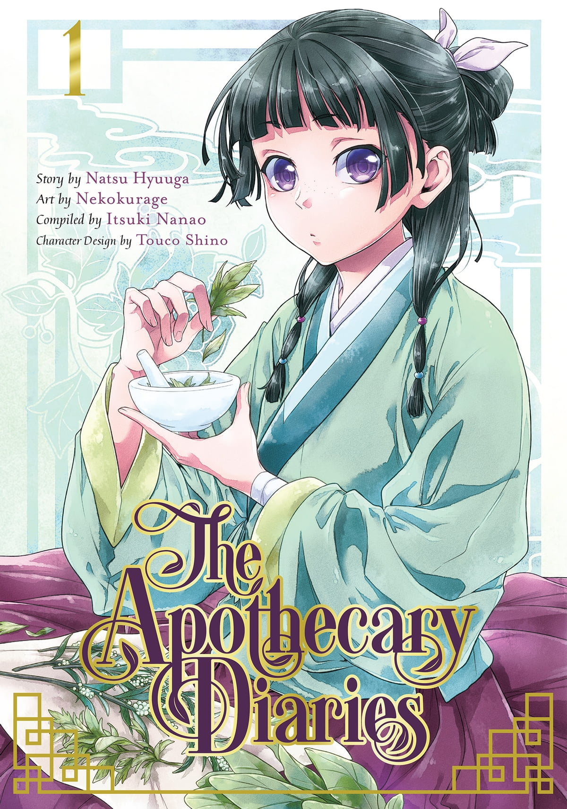

Toshokan Monthly Blog
December Manga Recommendations
Welcome back, Toshokan patrons! It’s the final month of the year, which means one last blog post from us at Headquarters for this year. So let’s cut to the chase
and start with the monthly recommendations! As usual, SPOILERS for the manga :))

This absolutely beautiful piece of fiction, titled “The Apothecary Diaries” written by Natsu Hyuuga and illustrated by Touko Shino, is a drama,
romance and mystery manga. It also has both a light novel and ongoing anime for those who want to check it out on different mediums.
Apothecary Diaries is special in the way that it is incredibly well written; It’s story is quickly paced and highly addictive, and we can’t put it down even
until now! The protagonist, Mao Mao, probably will go down as one of the best female characters ever written. She is an active lead who advances the plot, and
even while she is targeted by outside forces, she manages to hold her own. The author’s approach by making her a crazy scientist and medical doctor was
refreshing to witness, and her obsession with poisons is unique, entertaining and funny, and makes her writing stand out so much.
Her boundless curiosity is the source of her strength, but it also acts as her biggest character flaw, and it is again another product of the author’s
incredibly writing. Its not often seen in media where a character’s strength also serves as their Achilles’ heel, and have them be so closely connected to one
another. It’s so fun to see how much of a cunning person Mao Mao is, and how she also cannot keep her mouth shut. Those aspects really make her character so
dynamic and enjoyable!
We also love how she serves as the detective for her own cases. The series is incredibly subversive in the fact that it initially offers you cases that seem to
be self-contained, Sherlock Holmes-esque mysteries only for the readers to later find out that they are all interconnected with one another. Its such a thrill
to read those kinds of stories!
The romance between Mao Mao and the male lead Jinshi is so, so good. They have a clear and not forced chemistry with one another. Mao Mao being uninterested at
first isn’t played out as the usual “tsundere” trope seen in most Japanese media, because Mao Mao and Jinshi both have dimensions to their characters besides
the romance. Jinshi himself is incredibly charismatic and has such an interesting backstory that leaves you wanting to know more.
Overall, The Apothecary Diaries has an incredibly story that deserves to be checked out. It can have moments where it falls weak, or the story takes an unecessary
step, but those don’t take away from how beautiful, entertaining, and absolutely enjoyable it is.
That’s it for today’s episode, dear patrons! Merry Christmas and a Happy New Year!
Post a Comment
Comment as:
This site is protected by reCAPTCHA and the Google privacy policy and Terms of Service apply